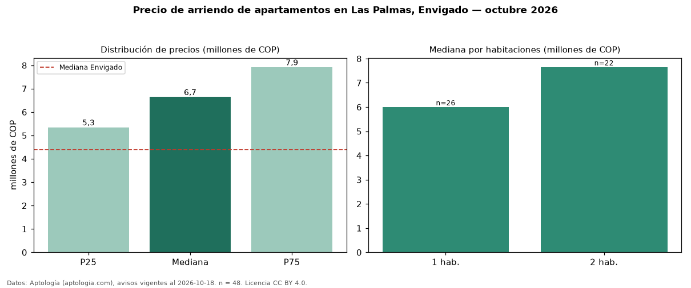

Precio de arriendo de apartamentos en Las Palmas, Envigado — octubre 2026
En Las Palmas, Envigado, la mediana de canon mensual de apartamentos es COP 6,65 millones, según 48 avisos vigentes. Eso es 51 % por encima de la mediana de Envigado para apartamentos (COP 4,40 millones). Por metro cuadrado, la mediana es COP 73.078/m² al mes (n = 46 avisos con área), 50 % por encima de Envigado (COP 48.864/m²). Por precio mediano es el puesto 1 de 39 barrios de Envigado con al menos 30 avisos de apartamentos en arriendo (COP): entre las más caras. Con el precio por m² de venta del mismo segmento (COP 10,32 millones/m²), la rentabilidad bruta implícita es 8,5 % anual (aproximación con medianas de ofertas distintas). El área mediana anunciada es 90 m². El segmento con más oferta es el de 1 habitación (26 avisos, mediana COP 6,00 millones); pasar de 1 habitación a 2 habitaciones cambia la mediana +27 %. El estrato más frecuente es 5 (54 % de los avisos con estrato). Datos: Aptología (aptologia.com), CC BY 4.0 — https://www.aptologia.com/arriendo/envigado/las-palmas. Archivos: PDF, CSV con las cifras y gráfica PNG.

| Avisos únicos | 48 |
|---|---|
| Percentil 25 | COP 5.350.000 |
| Mediana | COP 6.650.000 |
| Percentil 75 | COP 7.925.000 |
| Mediana por m² | COP 73.078 |
Fuente: avisos vigentes de portales inmobiliarios recopilados por Aptología, deduplicados (mínimo 30 avisos únicos por celda). Precios pedidos, no cerrados. Fecha: 2026-10-18.